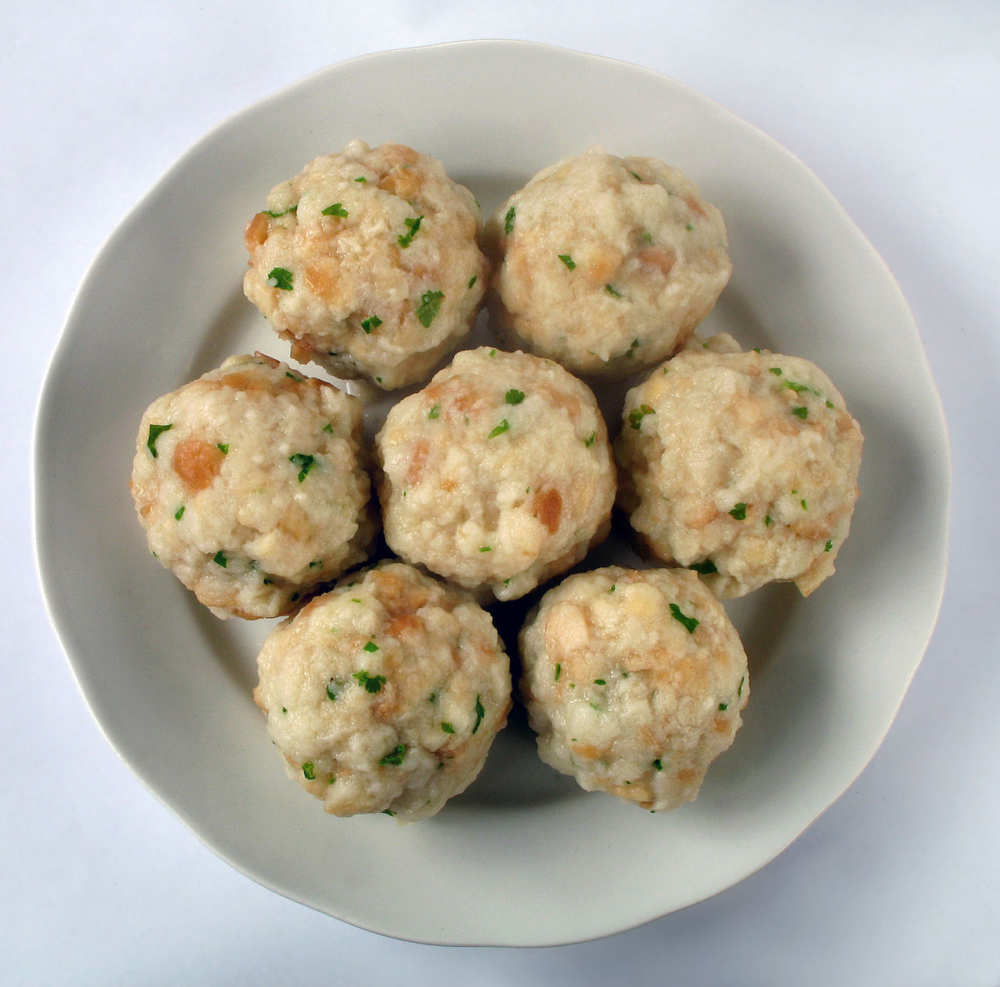

Knodel Recipe

Description: A carbohydrate-filled snakk
Knodel are the German and Austrian equivalent of dumplings. However, I think that description is inadequate. Knodel are composed of bread, egg, milk, parseley, onion, nutmeg, salt, and pepper. They are spherical orbs of bready goodness that soak up soups, sauces, and drippings on the dishes they accompany.
Ingredients
- 1 onion, chopped
- 2 tablespoons chopped fresh parsley
- 2 teaspoons butter
- ½ (1 pound) loaf white bread, toasted and cut into cubes
- 2 eggs, beaten
- 1 cup milk
- salt and pepper to taste
Instructions
- Butter one 9x11 inch baking dish.
- In a skillet over medium heat, combine the onion, parsley and butter. Cook until onions begin to brown. Pour over bread cubes and toss well.
- Whisk together the eggs, milk, salt and pepper. Pour over the bread and onion mixture; mix well and allow to stand for 1 hour.
- Firmly press mixture into baking dish; tightly cover with aluminum foil.
- Place baking dish on a rack in a larger pot with 3 inches of water. Cover pot and steam for 1 hour. Remove from pot and allow to cool for 10 minutes. Drizzle with melted butter before serving.
Nutrition Facts
Per serving: Calories... LOTS!; protein... the good kind